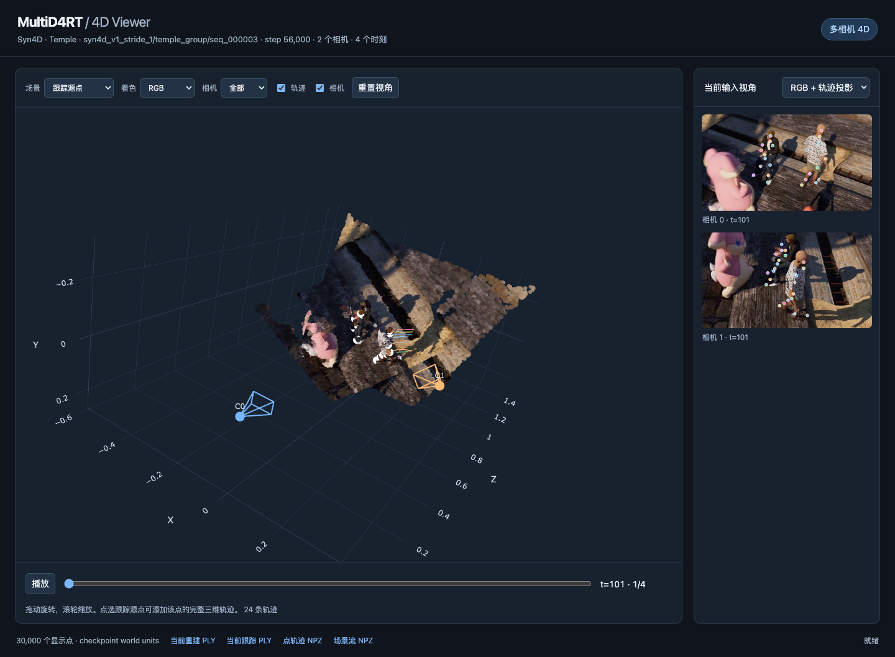
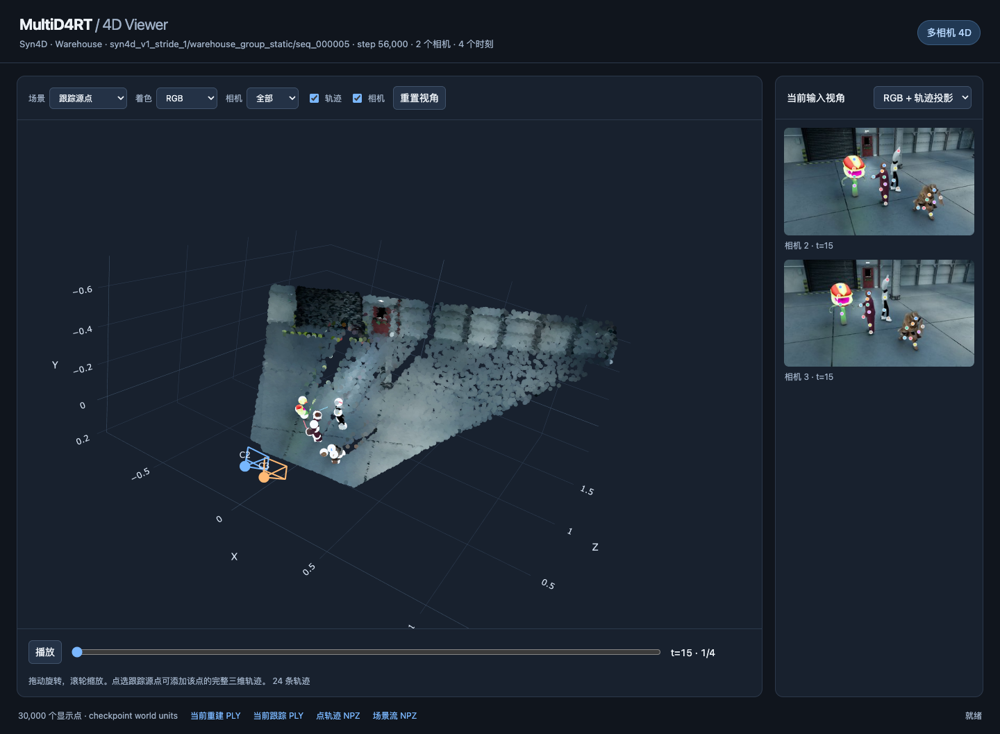
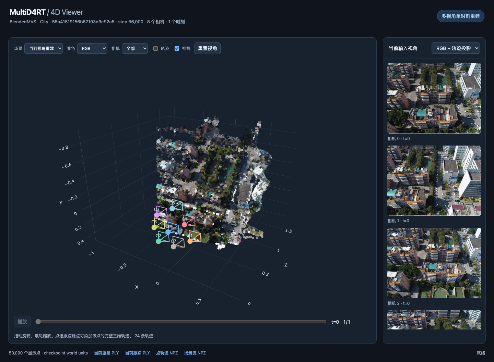
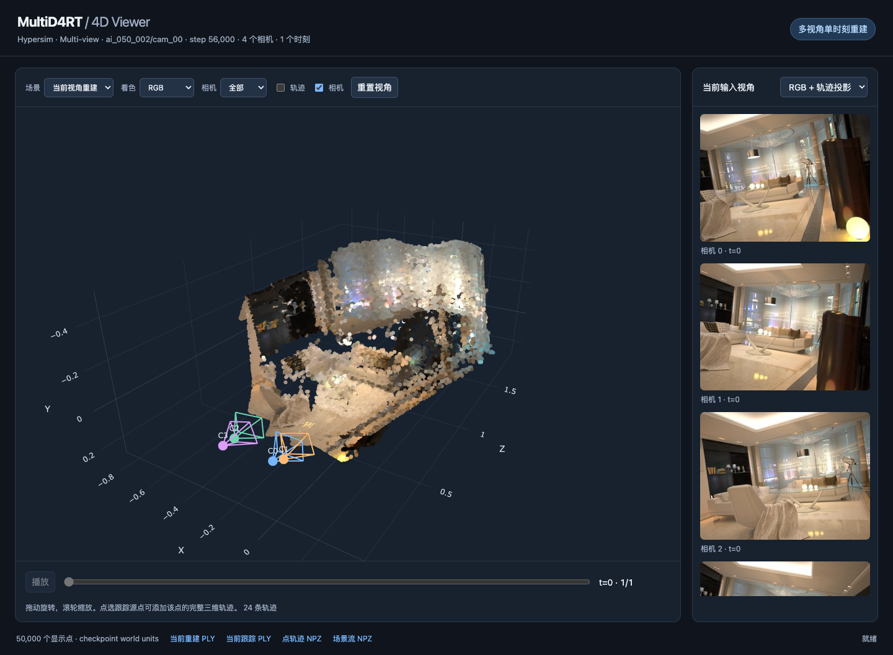
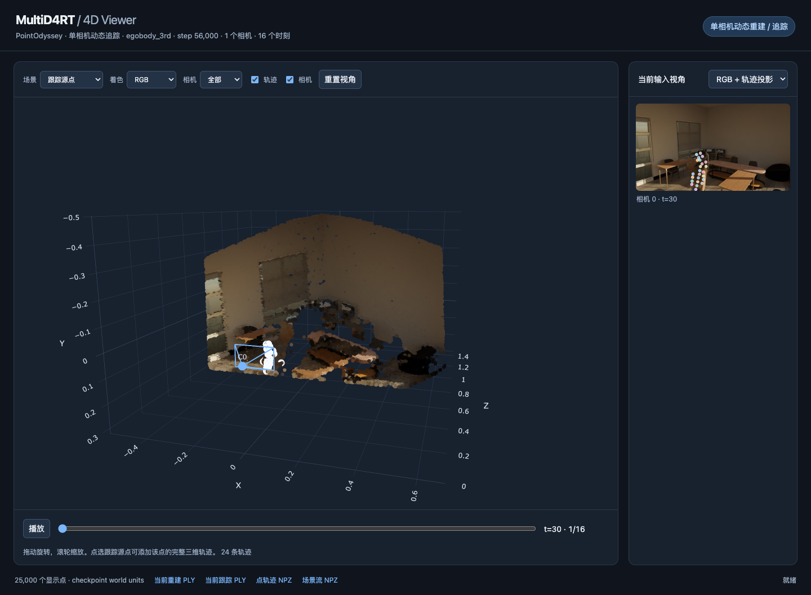

Multi-camera 4D Reconstruction and Tracking
MultiD4RT · 精选重建实例
五组真实 RGB 输入，展示双相机人物动态场景、多视角建筑与室内重建，以及单相机连续三维追踪。三维点、深度和相机位姿均由模型预测。
已训练 giant 权重 · step 56,000原始分辨率 · 保持宽高比离线交互页面点击打开实例：拖动旋转、滚轮缩放、播放时间；可切换相机、查看深度或点选源点添加轨迹。



